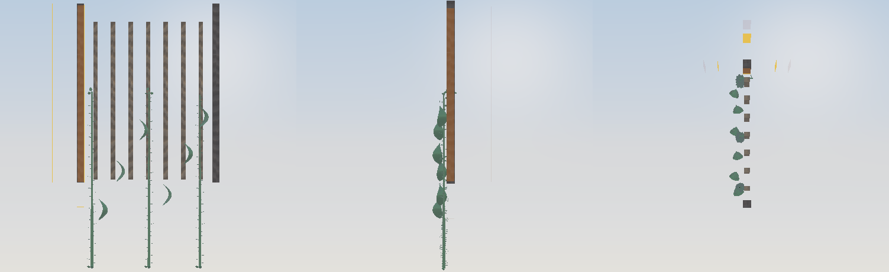

Bougainvillea Trellis

A distinct bougainvillea trellis building-landscape object with explicit support, irrigation or attachment semantics and object-local botanical geometry.
Evidence 80/100 · Visual match unmeasured7 distinct grammar versions
A distinct bougainvillea trellis building-landscape object with explicit support, irrigation or attachment semantics and object-local botanical geometry.
Evidence 80/100 · Visual match unmeasured
A distinct grape arbor vine building-landscape object with explicit support, irrigation or attachment semantics and object-local botanical geometry.
Evidence 80/100 · Visual match unmeasured
A distinct green facade cable vine building-landscape object with explicit support, irrigation or attachment semantics and object-local botanical geometry.
Evidence 80/100 · Visual match unmeasured
A distinct jasmine wall climber building-landscape object with explicit support, irrigation or attachment semantics and object-local botanical geometry.
Evidence 80/100 · Visual match unmeasured
A compact pergola bay with twining tendril vines, branching overhead growth, leaf blades, and flowering petals around a clear structural frame.
Evidence 100/100 · 99.91% minimum view match
A freestanding slatted privacy screen with deterministic wall-seeking ivy, offset attachment behavior, a planted trough, and visible support feet.
Evidence 100/100 · 99.92% minimum view matchA distinct wisteria pergola building-landscape object with explicit support, irrigation or attachment semantics and object-local botanical geometry.
Evidence 80/100 · Visual match unmeasured